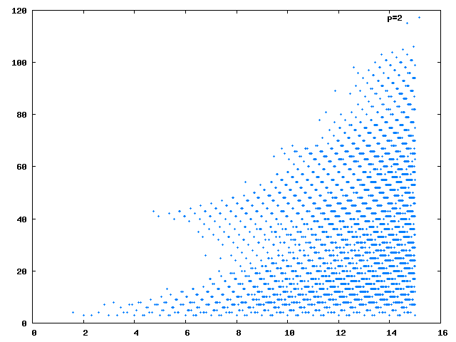

Today, I am going to show that there is no upper bound on the lengths of Collatz sequences. That is given any \(k\geq 1\), there is an initial value \(a_0\) such that the length of the recursive sequence \(a_{n+1} = g(a_n)\) before we terminate it at \(a_m = 1\) with \(m\geq k\).
First, let us recall that we defined \(g(n) = f( 3 f(n) + 1 )\) where \(f(n)\) is defined to be \(n\) whenever \(n\) is odd, and recursively defined as \(f(n) = f(n/2)\) whenever \(n\) is even.
Simple modular arithmetic shows that an integer \(m\) is in the image of \(g\) if and only if \(m\) modulo 6 is 4. So, in order to keep the length of the recursive sequence long, we must maintain that fact for successive pre-images.
First, the Collatz function:
(defun g (n)
(labels ((f (k) (if (evenp k) (f (/ k 2)) k)))
(f (1+ (* 3 (f n))))))
GNow, the following function calculates the length of a recursive sequence for a given initial value.
(defun run (fn x &optional (m 1) tail)
(if (member x tail)
m
(run fn (funcall fn x) (1+ m) (cons x tail))))
RUNThe following lisp function creates successive pre-images for a given number of iterations for an initial point.
(defun pre-image (m &optional (s 1))
(cond
((or (zerop (mod m 3)) (zerop s)) m)
((= 2 (mod m 3)) (pre-image (* 2 m) s))
(t (do ((x (* 4 m) (* x 4)))
((= 4 (mod x 18)) (pre-image (/ (1- x) 3) (1- s)))))))
PRE-IMAGEThere is one thing to note: if \(n\) is \(0\) modulo 3, there is no hope in calculating a pre-image: the function returns the number as is. Let me test:
(run #'g (pre-image 7 1350))
1357
(run #'g (pre-image 8 1350))
1352
(run #'g (pre-image 10 1350))
1353
(run #'g (pre-image 11 1350))
1356I am going to finish off the series of posts (for now) on Collatz with a neat graph: the graph you see with this post is the length of the recursive sequences with \(a_0 = n\) plotted against \(\log_2(n)\).